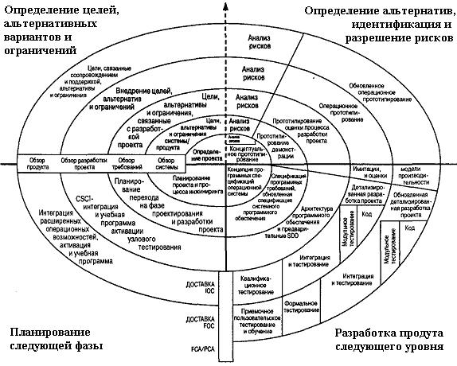

Спиральная модель
Воплощает в себе преимущества каскадной модели.
Включены анализ рисков, управление ими, процессы поддержки и менеджмента.
Разработка продукта с использованием метода прототипирования или быстрой разработки приложения Каждый цикл представляет собой набор операций, которому соответствует такое же количество стадий, как и в модели каскадного процесса.

Рисунок 2.8 - Спиральная модель ЖЦ
Преимущества спиральной модели.
- Модель разрешает пользователям "увидеть" систему на ранних этапах.
- Обеспечивается определение непреодолимых рисков.
- Пользователи принимают участие при планировании, анализе рисков, разработке.
- Предусмотрена возможность гибкого проектирования.
- Обеспечивается разбиение большого объема работы по разработке продукта на небольшие части.
- Обратная связь от пользователей к разработчикам выполняется с высокой частотой и на ранних этапах модели.
- Не нужно распределять заранее финансовые ресурсы.
Недостатки спиральной модели.
- При низкой степени риска или небольших размерах, модель может оказаться дорогостоящей.
- Модель имеет усложненную структуру.
- Нужда в высоко профессиональных знаниях для оценки рисков.
- Спираль может продолжаться до бесконечности.
Область применения спиральной модели.
- Для средней или высокой степени риска.
- Когда пользователи не уверены в своих потребностях.
- Когда ожидаются существенные изменения.
- Когда речь идет о применении новой технологии.
- В случае больших проектов.
- При выполнении бизнес-проектов и проектов в области аэрокосмической промышленности, обороны и инжиниринга.